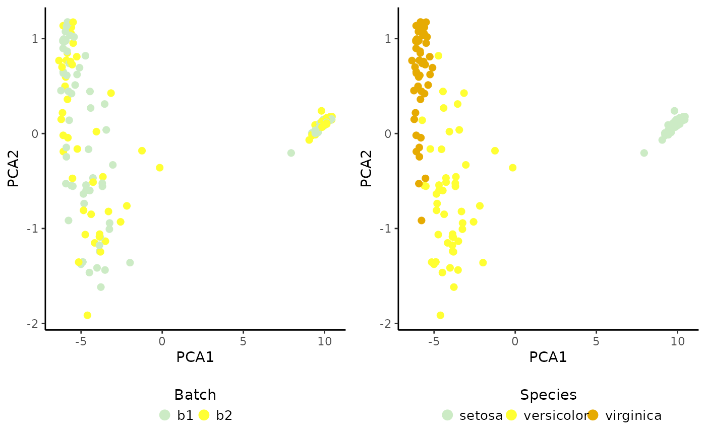

Run divisive ICP clustering in parallel in order to perform multi-level integration.
Usage
RunParallelDivisiveICP.SingleCellExperiment(
object,
batch.label,
k,
d,
L,
r,
C,
reg.type,
max.iter,
threads,
icp.batch.size,
train.with.bnn,
train.k.nn,
train.k.nn.prop,
build.train.set,
build.train.params,
scale.by,
use.cluster.seed,
divisive.method,
allow.free.k,
ari.cutoff,
verbose
)
# S4 method for class 'SingleCellExperiment'
RunParallelDivisiveICP(
object,
batch.label = NULL,
k = 16,
d = 0.3,
L = 50,
r = 5,
C = 0.3,
reg.type = "L1",
max.iter = 200,
threads = 0,
icp.batch.size = Inf,
train.with.bnn = TRUE,
train.k.nn = 10,
train.k.nn.prop = 0.3,
build.train.set = TRUE,
build.train.params = list(),
scale.by = NULL,
use.cluster.seed = TRUE,
divisive.method = "cluster.batch",
allow.free.k = TRUE,
ari.cutoff = 0.3,
verbose = FALSE
)Arguments
- object
An object of
SingleCellExperimentclass.- batch.label
A variable name (of class
character) available in the cell metadatacolData(object)with the batch labels (characterorfactor) to use. The variable provided must not containNAs. By defaultNULL, i.e., cells are sampled evenly regardless their batch.- k
A positive integer power of two, i.e.,
2**n, wheren>0, specifying the number of clusters in the last Iterative Clustering Projection (ICP) round. Decreasingkleads to smaller cell populations diversity and vice versa. Default is16, i.e., the divisive clustering 2 -> 4 -> 8 -> 16 is performed.- d
A numeric greater than
0and smaller than1that determines how many cellsnare down- or oversampled from each cluster into the training data (n=N/k*d), whereNis the total number of cells,kis the number of clusters in ICP. Increasing above 0.3 leads greadually to smaller cell populations diversity. Default is0.3.- L
A positive integer greater than
1denoting the number of the ICP runs to run. Default is50. Increasing recommended with a significantly larger sample size (tens of thousands of cells). Default is200.- r
A positive integer that denotes the number of reiterations performed until the ICP algorithm stops. Increasing recommended with a significantly larger sample size (tens of thousands of cells). Default is
5.- C
A positive real number denoting the cost of constraints violation in the L1-regularized logistic regression model from the LIBLINEAR library. Decreasing leads to more stringent feature selection, i.e. less features are selected that are used to build the projection classifier. Decreasing to a very low value (~
0.01) can lead to failure to identify central cell populations. Default0.3.- reg.type
"L1" or "L2". L2-regularization was not investigated in the manuscript, but it leads to a more conventional outcome (less subpopulations). Default is "L1".
- max.iter
A positive integer that denotes the maximum number of iterations performed until ICP stops. This parameter is only useful in situations where ICP converges extremely slowly, preventing the algorithm to run too long. In most cases, reaching the number of reiterations (
r=5) terminates the algorithm. Default is200.- threads
A positive integer that specifies how many logical processors (threads) to use in parallel computation. Set
1to disable parallelism altogether or0to use all available threas except one. Default is0.- icp.batch.size
A positive integer that specifies how many cells to randomly select. It behaves differently depending on
build.train.set. Ifbuild.train.set=FALSE, it randomly samples cells for each ICP run from the complete dataset. Ifbuild.train.set=TRUE, it randomly samples cells once, before building the training set with the sampled cells (per batch ifbatch.labeldifferent thanNULL). Default isInf, which means using all cells.- train.with.bnn
Train data with batch nearest neighbors. Default is
TRUE. Only used ifbatch.labelis given.- train.k.nn
Train data with batch nearest neighbors using
knearest neighbors. Default is10. Only used iftrain.with.bnnisTRUEandtrain.k.nn.propisNULL.- train.k.nn.prop
A numeric (higher than 0 and lower than 1) corresponding to the fraction of cells per cluster to use as
train.k.nnnearest neighbors. IfNULLthe number oftrain.k.nnnearest neighbors is equal totrain.k.nn. If given,train.k.nnparameter is ignored andtrain.k.nnis calculated based ontrain.k.nn.prop. By default0.3meaning that 30 proportions for the different divisive clustering rounds can be given, otherwise the same value is given for all.- build.train.set
Logical specifying if a training set should be built from the data or the whole data should be used for training. By default
TRUE.- build.train.params
A list of parameters to be passed to the function
AggregateDataByBatch(). Only provided ifbuild.train.setisTRUE.- scale.by
A character specifying if the data should be scaled by
cellor byfeaturebefore training. Default isNULL, i.e., the data is not scaled before training.- use.cluster.seed
Should the same starting clustering result be provided to ensure more reproducible results (logical). If
FALSE, each ICP run starts with a total random clustering and, thus, independent clustering. By defaultTRUE, i.e., the same clustering result is provided based on PCA density sampling. Ifbatch.labeldifferent thanNULL, the PCA density sampling is performed in a batch wise manner.- divisive.method
Divisive method (character). One of
"random"(randomly sample two clusters out of every cluster previously found),"cluster"or"cluster.batch"(sample two clusters out of every cluster previously found based on the cluster probability distribution across batches or per batch). By default"cluster.batch". Ifbatch.labelisNULL, it is automatically set tocluster. It can be set torandomif explicitly provided.- allow.free.k
Allow free
k(logical). Allow ICP algorithm to decrease thekgiven in case it does not findktarget clusters. By defaultTRUE.- ari.cutoff
Include ICP models and probability tables with an Adjusted Rand Index higher than
ari.cutoff(numeric). By default0.3. A value that can range between 0 (include all) and lower than 1.- verbose
A logical value to print verbose during the ICP run in case of parallelization, i.e., 'threads' different than
1. Default 'FALSE'.
Examples
# Import package
suppressPackageStartupMessages(library("SingleCellExperiment"))
# Create toy SCE data
batches <- c("b1", "b2")
set.seed(239)
batch <- sample(x = batches, size = nrow(iris), replace = TRUE)
sce <- SingleCellExperiment(assays = list(logcounts = t(iris[,1:4])),
colData = DataFrame("Species" = iris$Species,
"Batch" = batch))
colnames(sce) <- paste0("samp", 1:ncol(sce))
# Prepare SCE object for analysis
sce <- PrepareData(sce)
#> Converting object of `matrix` class into `dgCMatrix`. Please note that Coralysis has been designed to work with sparse data, i.e. data with a high proportion of zero values! Dense data will likely increase run time and memory usage drastically!
#> 4/4 features remain after filtering features with only zero values.
# Multi-level integration (just for highlighting purposes; use default parameters)
set.seed(123)
sce <- RunParallelDivisiveICP(object = sce, batch.label = "Batch",
k = 2, L = 25, C = 1, train.k.nn = 10,
train.k.nn.prop = NULL, use.cluster.seed = FALSE,
build.train.set = FALSE, ari.cutoff = 0.1,
threads = 2)
#>
#> Initializing divisive ICP clustering...
#>
|
| | 0%
|
|=== | 4%
|
|====== | 8%
|
|========= | 12%
|
|============ | 17%
|
|=============== | 21%
|
|================== | 25%
|
|==================== | 29%
|
|======================= | 33%
|
|========================== | 38%
|
|============================= | 42%
|
|================================ | 46%
|
|=================================== | 50%
|
|====================================== | 54%
|
|========================================= | 58%
|
|============================================ | 62%
|
|=============================================== | 67%
|
|================================================== | 71%
|
|==================================================== | 75%
|
|======================================================= | 79%
|
|========================================================== | 83%
|
|============================================================= | 88%
|
|================================================================ | 92%
|
|=================================================================== | 96%
|
|======================================================================| 100%
#>
#> Divisive ICP clustering completed successfully.
#>
#> Predicting cell cluster probabilities using ICP models...
#> Prediction of cell cluster probabilities completed successfully.
#>
#> Multi-level integration completed successfully.
# Integrated PCA
set.seed(125) # to ensure reproducibility for the default 'irlba' method
sce <- RunPCA(object = sce, assay.name = "joint.probability", p = 10)
#> Divisive ICP: selecting ICP tables multiple of 1
# Plot result
cowplot::plot_grid(PlotDimRed(object = sce, color.by = "Batch",
legend.nrow = 1),
PlotDimRed(object = sce, color.by = "Species",
legend.nrow = 1), ncol = 2)
